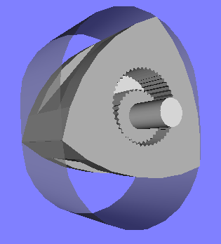

ぬるぬる動くRotary Engine(VRML)
このページはロータリーエンジン(Rotary Engine)の動きを3Dで再現するものです。
自由に角度を変えてみたり、拡大縮小できるところが通常の動画などとは異なるところで、
まさに仮想現実(Virturl Reality)です。

VRMLは残念ながら標準のブラウザでは見ることができませんので、VRMLビューアーを別途インストールする必要があります。
- WindowsではCortona 3D ViwerというVRMLビューアー(Active X ですのでInternet Explore 11上で動きます)をお勧めします。
- iOSにもCortona 3D Viwerというアプリ(360円)があります。
- androidではFreeX3Dというアプリがあります。
どうぞVRMLビューアーをインストールしてご鑑賞ください
ソースはオープンソースです(ライセンスは自由)自由に改変、あるいはアイデアだけ使って、
よりリアルなロータリーエンジンを作ってください。
 Copyright © 2018, Shimarisu Technologies.
Copyright © 2018, Shimarisu Technologies.